Nouveaux Animaux
Mini Dragon de Lave
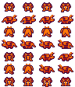
Obtention : Récompense du Lot de Combat du Temple. Une fois débloqué, achetable pour 50 000g à la Boutique Mystérieuse.
Production : Rubis, Quartz de feu, Obsidienne, Éclat de cendre.
Vaches à Fruits
Ces vaches exotiques se nourrissent des fruits de l'île. Elles sont achetables à la Boutique Mystérieuse après avoir complété le lot d'Agriculture.
| Animal | Production | Usage / Recette |
|---|---|---|
|
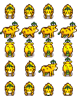 |
Lait de banane | Pudding à la banane, Vente |
|
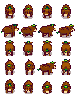 |
Lait de coco | Curry tropical, Piña Colada |
|
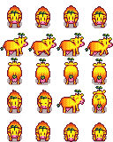 |
Lait de mangue | Salade mangue-crevette, Vente |
Variantes Dorées & du Néant
Utilisez la Poussière d'Or ou la Poussière du Néant pour transformer vos animaux adultes.
Variantes Dorées
- Vache Dorée (Blanche)
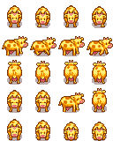
- Vache Dorée (Brune)
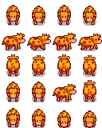
- Chèvre Dorée
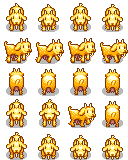
- Mouton Doré
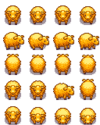
- Canard Doré
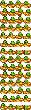
- Dinosaure Doré
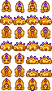
- Autruche Dorée
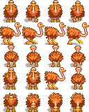
Variantes du Néant
- Vache du Néant (Blanche)
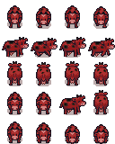
- Vache du Néant (Brune)
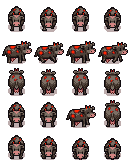
- Chèvre du Néant
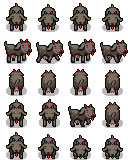
- Mouton du Néant
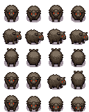
- Lapin du Néant
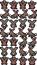
- Canard du Néant
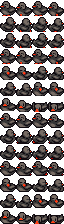
- Dinosaure du Néant
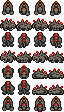
- Autruche du Néant
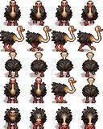
Poulet d'Iridium
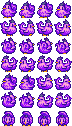
Un poulet d'élite produisant des œufs d'iridium. Déblocable uniquement si le mode Perfectionniste est activé ou en fin de partie.